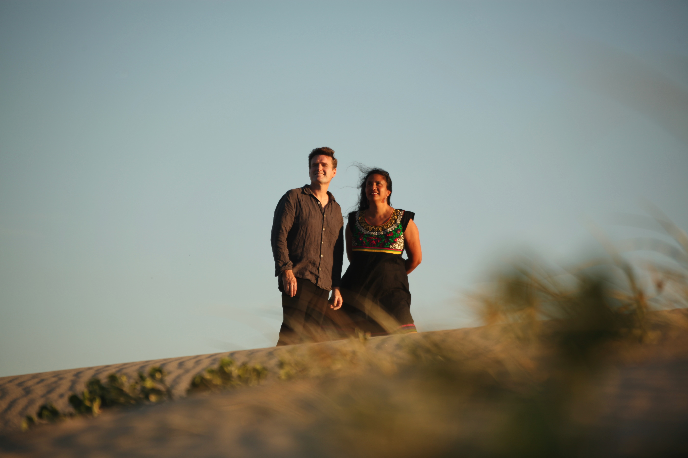
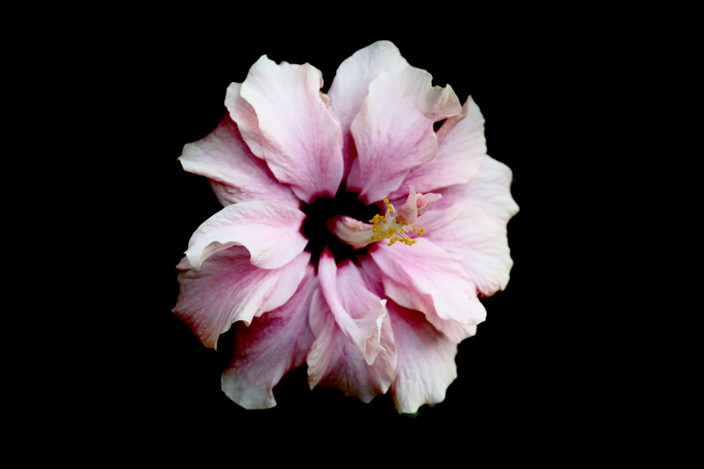
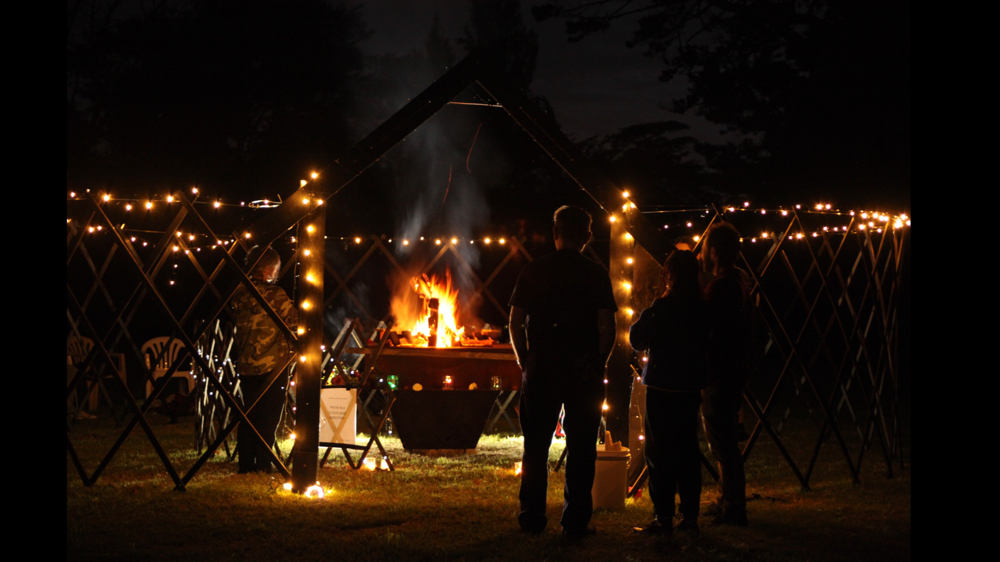
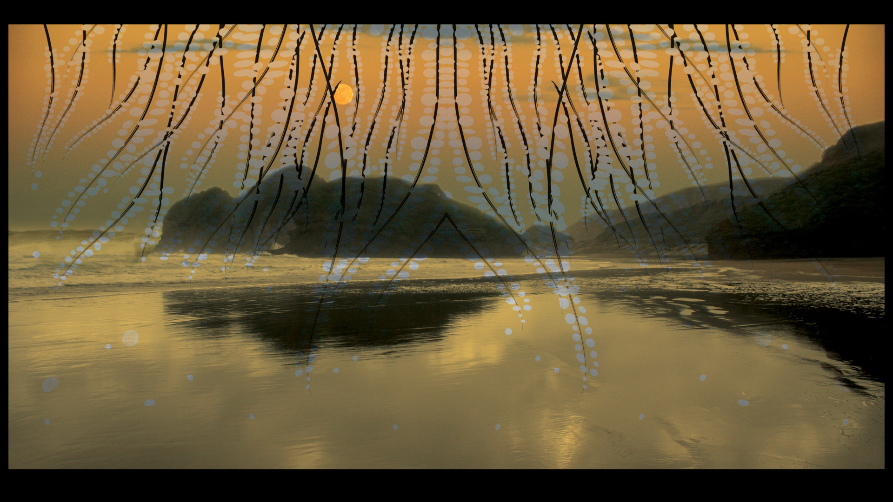
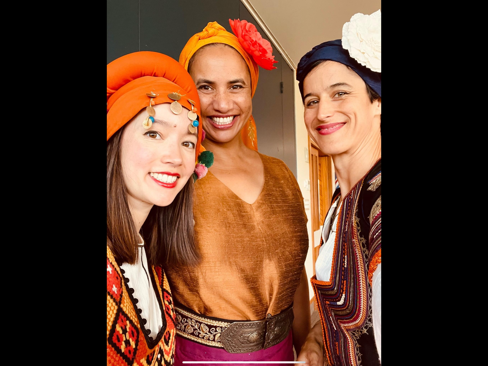

Sally Jamila is a vocalist, performer and composer/arranger living in West Auckland. Her improvised and instrumental harmonic style reflects her journey through jazz and world-music. Born in New Zealand, Sally’s Cook Island-Tahitian roots have woven together with Croatia, and blended with her Indian heritage providing a rich fabric of influences. Her music is diverse and interdisciplinary, revealing treasured fragments through artistry of tapu taonga. Having released her debut recorded work Invocation (2008), she shares her music in film, theatre, and multi-media. In amongst current projects: ACAPOLLiNATIONS, and the crucibulum she is currently collaborating in SAJA recording a new album due for release in 2025.
Sally’s passion is using her craft as a means for exploring narratives of universal meaning and profundity. In acknowledging the power and emotional force of music, she dedicates her spiritual life to the living practice of transformation through art.

SAJA is a collaboration with Jamie Gabriel (AUS) blending their areas of interest in music and technology through multi-disciplinary exploration. A co-lab of live performance, recorded song and lush soundscapes.

A collaboration with other artists creating a diverse catalogue of sacred works that include song, chant, soundscape with recitation and other instrumental works.

Co-created with Robert Mignault, the crucibulum Experience is the Alchemy of Transformation. This large-scale, immersive and ‘performed’ art installation powerfully underscores the critical need for cultural and societal transformation and climate action.

A rich soundscape through meditative invocation, weaving together eclectic world music with the tradition of a spiritual practice. A debut album.

A multi-lingual, compelling collection of folklore songs, where archaic musical systems are reimagined for three vivacious voices. Evocative melodies, stirringly close harmony and stories of longing, harvest and transcendence.